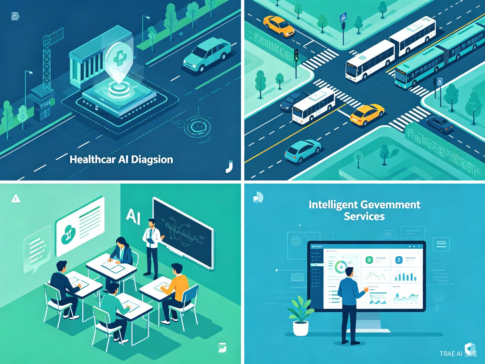

一、创意名称与介绍
创意名称
「AI 区域透视镜」—— 区域人工智能应用情况汇报平台
想解决什么问题
当前，人工智能技术在全国各地快速落地，但缺乏统一、直观的数据汇报机制。政府部门、产业园区、投资机构难以快速了解某一区域的 AI 应用全景：哪些行业渗透率最高？哪些场景落地最快？各地政策支持力度如何？信息分散在各类报告、新闻和内部文件中，获取成本极高。
为什么会想到做这个
在参与区域数字经济调研和产业规划工作中发现，基层决策者对"AI 在我们这里到底用得怎么样"这一问题缺乏量化回答。现有的行业报告多为全国性宏观分析，缺少区域粒度的精细化洞察。同时，区域在推动 AI 产业发展过程中积累了大量优势资源（产业门类齐全、人口规模庞大、市场主体活跃），但缺乏有效的展示和汇报工具。我们希望构建一个可自动采集、智能分析、可视化呈现的区域 AI 应用汇报系统。
产品形态
一个Web 端智能汇报平台，支持自动数据采集、AI 智能分析、交互式可视化看板、一键生成汇报文档。平台可帮助区域全面展示自身 AI 产业发展优势与资源条件，形成标准化、可复用的汇报方案。
二、目标用户及痛点
地方政府 / 数字经济主管部门
需要向上级汇报本区域 AI 产业发展现状与优势资源，争取政策支持和资源倾斜，展示产业组织架构与推进成果。
产业园区 / 孵化器运营方
需要展示园区 AI 企业集聚效应和应用成果，呈现区域产业基础与配套能力，吸引招商投资和人才入驻。
投资机构 / 咨询公司
需要快速评估某区域 AI 赛道的投资价值和产业成熟度，了解区域市场主体活跃度与转型需求，辅助投资决策。
科研机构 / 高校智库
需要获取区域 AI 应用的一手数据，了解区域产业门类覆盖和应用场景丰富度，支撑学术研究和政策建议撰写。
核心痛点：区域 AI 产业优势资源（产业门类、人口规模、市场主体等）缺乏可视化展示手段；汇报材料制作周期长、格式不统一；产业组织架构和推进机制难以直观呈现；缺乏区域对比视角和动态更新能力。
使用场景：向上级汇报 AI 产业发展情况、招商引资路演、政策制定调研、投资尽调分析、季度/年度产业总结。
三、区域发展优势与资源条件
平台的核心价值之一，是帮助区域全面梳理和展示自身在 AI 产业发展方面的独特优势。以下以典型区域为例，展示平台可呈现的优势资源分析框架：
1. 产业与人口基础
产业门类齐全
拥有 41 个工业门类中的 35 个，门类覆盖广、配套能力强，具备传统产业向智能化转型的厚实底座，为人工智能技术提供了丰富的落地场景与改造对象。
人口规模形成应用势能
常住人口约 1880 万人，实际在地人口在 2850 万左右，形成庞大的消费市场与公共服务应用场景，为 AI 在交通、医疗、教育、政务等领域的规模化验证提供了天然土壤。
市场主体高度活跃
登记市场主体约 430 万户，月均新增约 20 万户，总量居全国第二、增量居全国第一。活跃的市场主体结构意味着海量的企业数字化转型需求，也构成 AI 应用供给的市场基础。
2. 领导与执行机制
区域建立了完善的 AI 产业推进组织架构，形成"领导小组—承办单位—行业专班"三级体系：
战略统筹 · 资源调配
协调 · 督导 · 落地推进
这一三级架构既保证了顶层战略的统一性，又通过专班机制保留了各领域的专业化推进能力。专班运行成熟后纳入矩阵体系，实现跨领域协同，是区域 AI 产业组织架构的核心特征。
3. 四重优势总结
区域人工智能产业已具备组织、资源、场景与开放四重优势，正处于从"单点突破"迈向"整体跃升"的关键阶段。平台将系统化呈现这四重优势，帮助区域清晰定位自身在 AI 产业版图中的位置。

四、核心功能设计
1. 多源数据智能采集
通过 AI 爬虫和 NLP 技术，自动从公开渠道采集区域 AI 相关数据：企业注册信息、专利申请、招投标公告、政策文件、新闻报道、招聘数据等，构建区域 AI 知识图谱。特别针对产业门类覆盖、人口规模、市场主体活跃度等核心指标进行专项采集。
2. AI 智能分析引擎
利用大语言模型对采集数据进行智能分类、趋势识别和异常检测。自动生成区域 AI 应用成熟度评分、行业渗透率排名、发展瓶颈预警等分析结论。针对区域独特的组织架构和推进机制，提供专项分析报告。
3. 交互式可视化看板
提供地图热力图、行业分布图、趋势折线图、对比雷达图等多维度可视化组件，支持区域间横向对比和时间纵向追踪。重点呈现产业基础数据、人口应用势能、市场主体活跃度等关键指标。
4. 一键汇报生成
根据用户选择的区域、时间范围和分析维度，自动生成结构化的汇报文档（HTML/PDF），包含数据图表、分析结论和政策建议。支持自定义汇报模板，适配不同汇报场景（向上级汇报、招商引资、内部总结等）。
五、价值与意义
📊 效率提升价值
将传统需要 2-4 周的人工调研汇报工作，缩短至数分钟自动生成。数据更新从季度级提升到周级甚至实时，极大提升决策效率。帮助区域及时向上级展示 AI 产业发展成果。
🌍 社会服务价值
为公共治理提供数据驱动的决策支撑，帮助政府精准施策。通过展示区域产业优势和资源条件，争取上级在数据、算力与转型卡点等关键环节给予精准支持，推动区域协同发展。
🎯 战略协同价值
将赋能中心等平台贡献为区域协同抓手，帮助区域在 AI 产业从"单点突破"迈向"整体跃升"的关键阶段，清晰呈现自身定位和发展路径，共同推动 AI 产业高质量发展。
商业价值：面向 B 端和 G 端客户，可采用 SaaS 订阅 + 定制化报告的商业模式。预估单个地级市年服务价值 10-50 万元。
六、技术路线与实现计划
技术栈
开发路线
第一阶段：数据层（2 周）
搭建多源数据采集管道，完成公开数据源的接入和清洗，构建区域产业基础数据库。
第二阶段：分析层（2 周）
集成 LLM 分析引擎，实现自动分类、评分和趋势识别，开发优势资源分析模型。
第三阶段：展示层（1 周）
构建可视化看板和汇报文档自动生成功能，支持多模板一键导出。
第四阶段：优化迭代（持续）
根据用户反馈优化分析模型，扩展数据源和区域覆盖，深化组织架构展示功能。
七、示例数据可视化
以下为平台核心可视化组件的概念演示，展示区域 AI 产业关键指标的分析框架：
八、总结
「AI 区域透视镜」旨在用 AI 的方式汇报 AI —— 通过智能数据采集、分析和可视化，让区域人工智能应用情况一目了然。平台将帮助区域全面展示产业门类齐全、人口规模庞大、市场主体活跃等核心优势，清晰呈现"领导小组—承办单位—行业专班"三级推进架构，为向上级争取精准支持提供有力的数据支撑。
区域人工智能产业正处于从"单点突破"迈向"整体跃升"的关键阶段。破解数据、算力与转型卡点，亟需上级在关键环节给予精准支持；区域也愿将赋能中心等平台贡献为上级区域协同抓手，共同推动人工智能产业高质量发展。
我们相信，看见数据，才能看见未来。